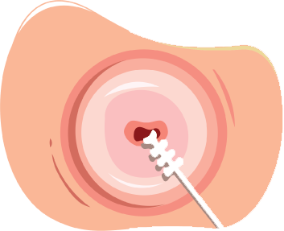

Se refiere al estudio de la morfología de las células provenientes del cuello uterino, procesadas a través de la tinción de Papanicolaou.
Da clic en las flechas para conocer más información:

La muestra citológica se obtiene mediante la visualización instrumentada del cuello uterino y la recolección de células con espátula de Ayre o con cepillos especializados.
1 de 5
La muestra obtenida debe extenderse y fijarse en laminillas de vidrio para su interpretación, conocida como citología cervical convencional; este proceso se realiza directamente desde el instrumento de recolección y es necesario introducirla en alcohol etílico al 96% para asegurar una adecuada fijación.
2 de 5
Cuando se utiliza una metodología en la que la muestra se encuentra en un medio de preservación citológica, lleva el nombre de citología en base líquida (CBL).
Por otro lado, cuando la citología cervical se utiliza como triaje posterior a la detección molecular del VPH-AR, se le llama citología refleja.
3 de 5
El análisis de la muestra requiere la intervención de personal entrenado, a nivel técnico (citotecnólogos/as) y personal de medicina especializado en anatomía patológica.
4 de 5
El reporte del resultado citológico debe ser acorde con el sistema Bethesda.
Se ha reportado un 55.4% de sensibilidad de esta prueba de tamizaje para la detección de lesiones NIC2+ con especificidad de 96.8%; sin embargo, estas mediciones pueden variar con base en el personal que lo interpreta.